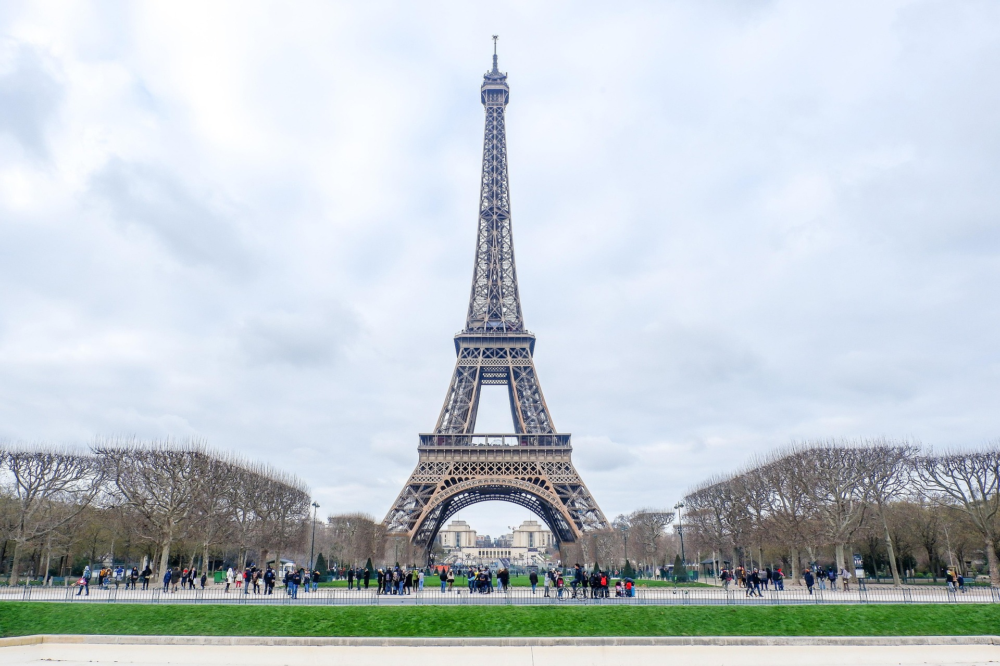
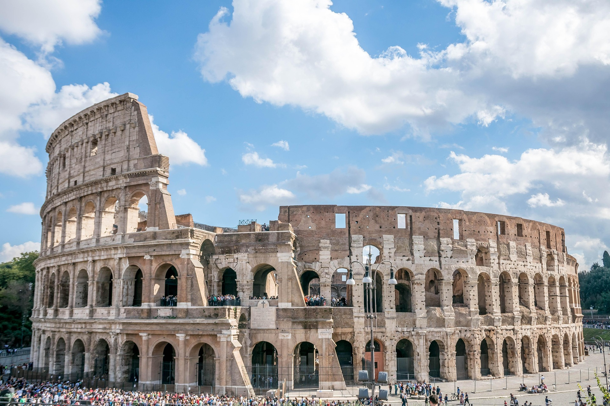
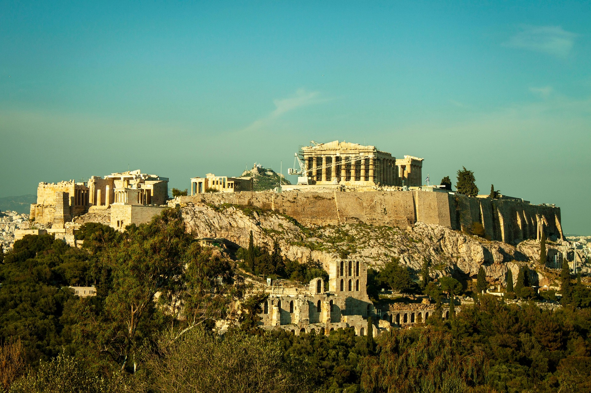
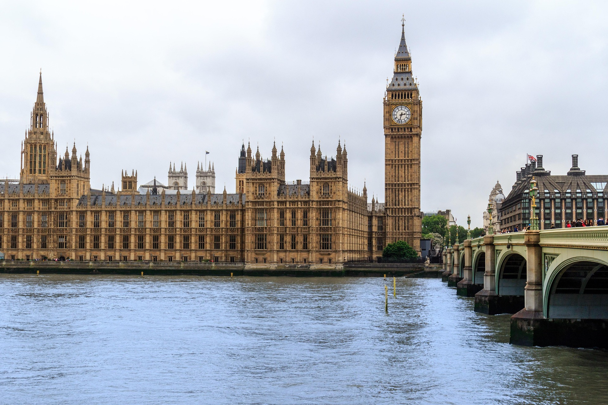

Torre Eiffel, França
A Torre Eiffel, em Paris, é um dos monumentos mais visitados do
mundo e parada obrigatória entre os viajantes que estão na Cidade
Luz. Planejada para a Exposição Universal de 1889, em comemoração ao
centenário da Revolução Francesa, a Torre Eiffel tem 330 metros de
altura, 7,3 mil toneladas de ferro e foi erguida em tempo recorde:
dois anos, dois meses e cinco dias. A imponente obra arquitetônica,
criada pelo engenheiro Gustave Eiffel, foi inaugurada em 31 de março
de 1889 e até hoje causa comoção entre os turistas.

Coliseu, Itália
O Coliseu, também conhecido como Anfiteatro Flaviano, é um antigo
anfiteatro em Roma, Itália. É um dos monumentos mais famosos do
mundo, conhecido por sua arquitetura impressionante e história rica.
Construído no século I d.C., foi palco de diversos eventos, como
combates de gladiadores, execuções e espetáculos públicos.

Acrópole de Atenas, Grécia
A Acrópole de Atenas foi uma fortaleza e base militar durante o
período neolítico, devido à sua posição que oferece uma excelente
vista da terra e do mar. Durante os tempos micênicos, tornou-se um
centro religioso, dedicado ao culto da deusa Atena. Dizem que o
local foi declarado uma província apenas para os deuses por um
oráculo e, portanto, deixou de ser habitado pelo povo. Os três
templos de maior importância, o Partenon, o Erechteion e o Templo da
Nike, foram erguidos durante o período clássico (450-330 a.C.) nos
restos dos templos anteriores. Todos os três são dedicados a
diferentes aspectos da deusa Atena. Os persas destruíram a Acrópole
durante a batalha de Salamina em 480 a.C.

Big Ben, Inglaterra
Big Ben é o apelido do sino gigante localizado na Torre do Relógio
do Palácio de Westminster, em Londres, onde se situa o Parlamento
Britânico. Embora muitas vezes usado para se referir à torre
inteira, Big Ben é na verdade o nome do sino de 13 toneladas e 2,28
metros de altura. A torre, oficialmente chamada de Elizabeth Tower
(anteriormente Torre do Relógio), foi renomeada em 2012 para
indexnagear o Jubileu de Diamante da Rainha Elizabeth II.
